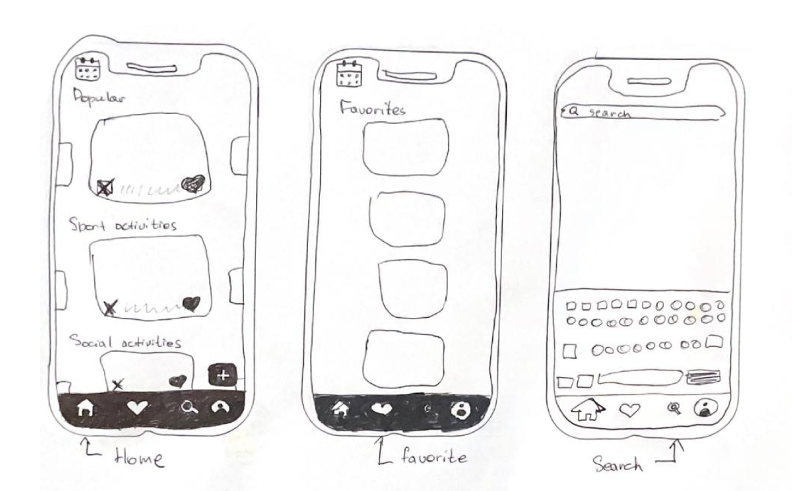
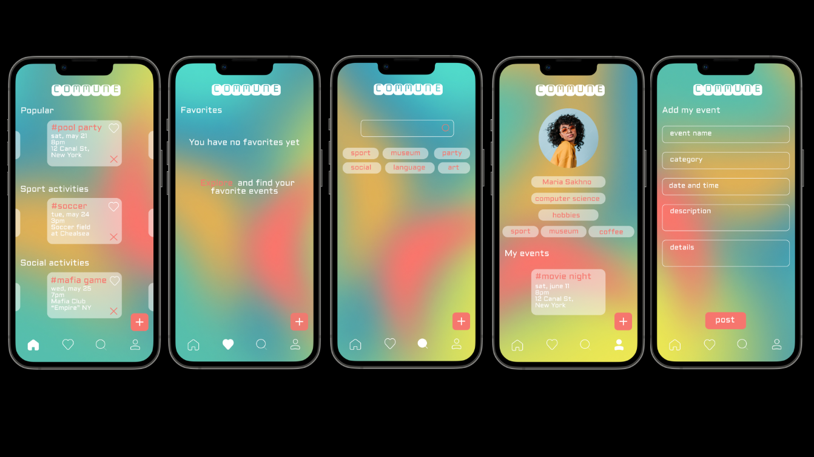

UX Research | UX/UI design | Prototyping | Branding
Commune is a mobile application designed for college communities. It allows users to post, discover, and attend various events happening in their area.
The app’s core purpose is to foster social connections, enable users to explore new hobbies, and provide an easy way to find activities during their free time. With Commune, users can browse and join events in the city, add events to their favorites list, indicate their attendance and share the event with others.
The target users are college students aged 18-25, particularly those who use technology daily and value socialization during their free time. These individuals seek simple, intuitive tools that help them discover new experiences and connect with like-minded peers.
Age: 22
Maria is an international student from Zurich, Switzerland, studying in New York. She enjoys exploring the city, attending museums, and meeting new people with shared interests. Maria wants a straightforward way to find fun events and make connections with others who share her hobbies.She struggles with finding events and activities, as she doesn’t know many people who can guide her in the city. She needs the app to expand her social circle, discover engaging activities, and enjoy her free time.
Research: conducted research on the target audience, their needs, and existing applications to identify gaps and opportunities. Developed persona to ensure the design caters to real user needs.
Prototyping: created low-fidelity sketches to outline the app’s structure and navigation. Developed a high-fidelity prototype in Figma, focusing on usability and an engaging design.
Design Approach: focused on creating a bright and playful interface that appeals to students. Designed interactive elements, such as buttons and hover effects, to enhance the user experience. Used a custom background with dynamic flow, designed in Photoshop, to add visual interest and reflect the app’s lively purpose.
Low fidelity prototype
High fidelity prototype
See the result here.